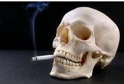

Zece pasi pentru a scapa de fumat
1.Planificarea unei truse de supravietuire

Sunt necesare substituente pentru placerea fumatului. Se pot obtine satisfactii orale de la gustari cu putine calorii, guma de mestecat sau scobitori, consumul de apa sau suc de fructe, mestecarea unui morcov sau a tulpinilor de telina, decojirea de seminte de floarea soarelui. Mainle pot fi ocupate cu un puzzle pentru degete, creioane sau lingurite pentru amestecat cafeaua. Este bine ca aceasta trusa sa fie tot timpul pregatita si sa insoteasca persoana care renunta la fumat cat timp are nevoie de ea. Daca nici una dintre aceste tactici nu functioneaza, persoana se poate motiva spunandu-si ca va trai mai multa daca nu fumeaza, poate suna un prieten pentru incurajare, sa faca o plimbare, sa mediteze sau sa se roage, sau sa faca exercitii de relaxare si stretching, sa numere pana la 300, sa se relaxeze cu o baie calda.
Cuprins:
1.Planificarea unei truse de supravietuire
2.Zece pasi pentru a scapa de fumat
5.Acum este momentul cel mai bun
2.Zece pasi pentru a scapa de fumat
E bine ca programul sa inceapa cu intrebarea: Ce situatii sau sentimente declanseaza dorinta mea de a fuma sau a mesteca tutun?
- Ce se intampla inainte de a fuma sau a mesteca? De fiecare data cand persoana mai recunoaste un factor ce declanseaza fumatul, este cu un pas mai aproape de a renunta la acest obicei.
Dimineata, cand nivelul de nicotina este cel mai scazut, persoana se poate simti subreda, iritabila sau cu dureri de cap. Dupa un film sau o intalnire lunga, se poate simti cu mintea neclara sau cu stare de rau.
- Sau mesteca atunci cand este frustrata? Nerabdatoare? Nervoasa? Suparata?
- Isi aprinde tigara de fiecare data cand vorbeste la telefon sau cand invata?
- Dar in pauzele dintre ore?
Prin identificare cat mai multor factori declansatori fizici si psihici cel care vrea sa renunte va afla ce trebuie sa depaseasca. A fi pregatit in a face fata factorilor declansatori, ii va permite sa fie cu un pas inaintea lor de fiecare data.
Se poate tine si un jurnal:
- Cand are persoana tendinta de a folosi nicotina cel mai mult?- Ce se intampla inainte de a fuma sau a mesteca? De fiecare data cand persoana mai recunoaste un factor ce declanseaza fumatul, este cu un pas mai aproape de a renunta la acest obicei.
Cel mai bine este sa se inceapa cu factorii fizici.
- Ce simptome de sevraj experimenteaza atunci cand nivelul de nicotina din organism scade?Dimineata, cand nivelul de nicotina este cel mai scazut, persoana se poate simti subreda, iritabila sau cu dureri de cap. Dupa un film sau o intalnire lunga, se poate simti cu mintea neclara sau cu stare de rau.
Factorii declansatori psihologici sunt situatiile care fac persoana sa-si doreasca o tigara.
- Blocajele in trafic o fac pe persoana in cauza sa doreasca un pachet de tigari?- Sau mesteca atunci cand este frustrata? Nerabdatoare? Nervoasa? Suparata?
- Isi aprinde tigara de fiecare data cand vorbeste la telefon sau cand invata?
- Dar in pauzele dintre ore?
Prin identificare cat mai multor factori declansatori fizici si psihici cel care vrea sa renunte va afla ce trebuie sa depaseasca. A fi pregatit in a face fata factorilor declansatori, ii va permite sa fie cu un pas inaintea lor de fiecare data.
3.Cunosterea barierelor
Programul pentru succes continua atunci cand persoana se intreaba: ce bariere intampin pentru a renunta la fumat? Ce obstacole imi protejau adicitia? Iata unele dintre cele mai frecvente bariere: